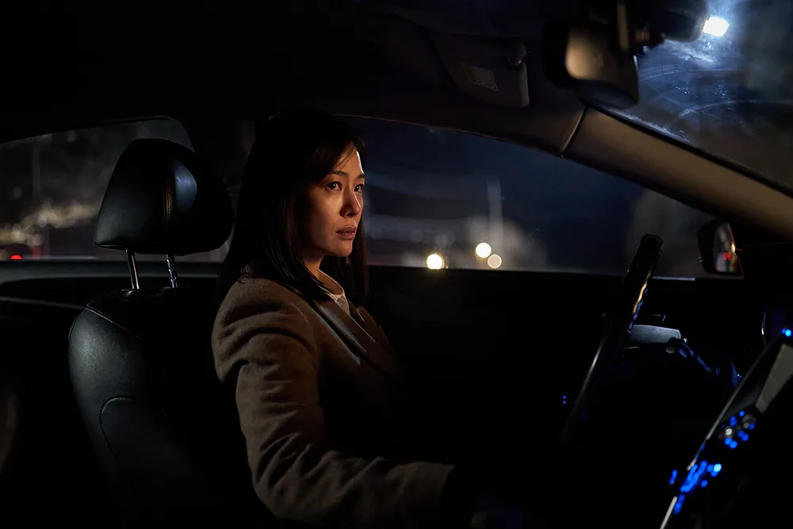
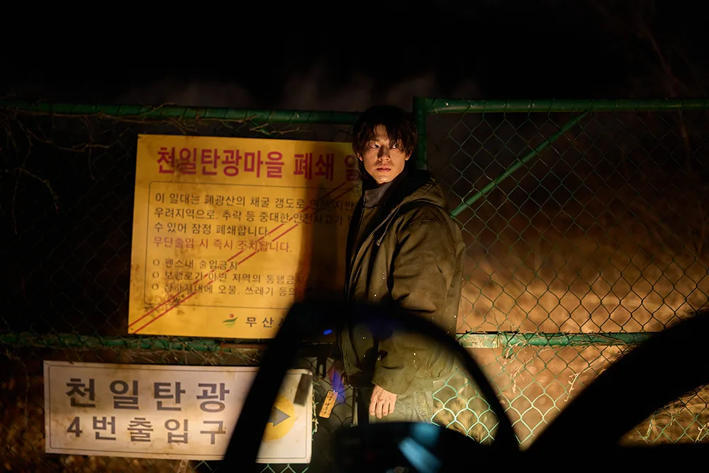
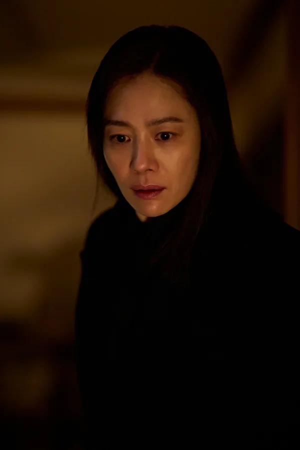
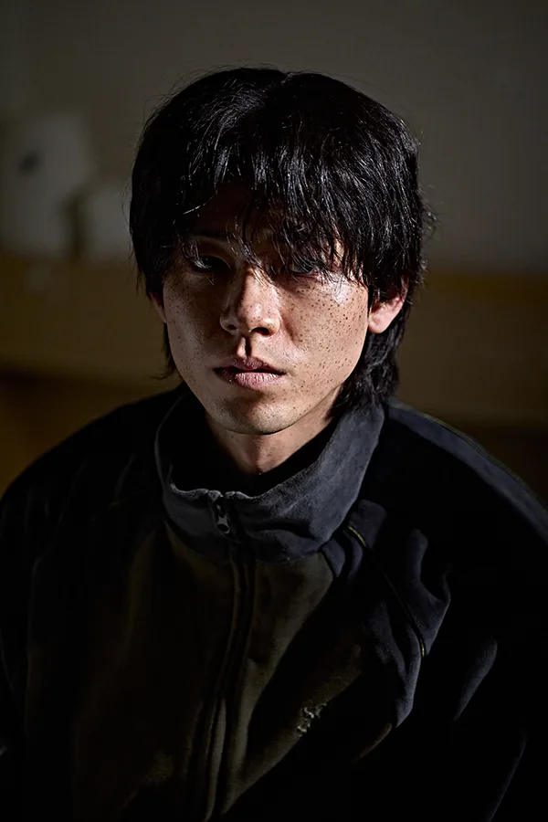
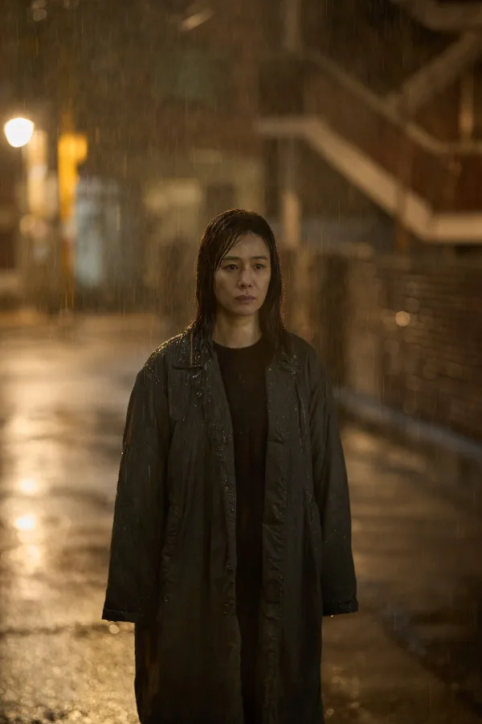
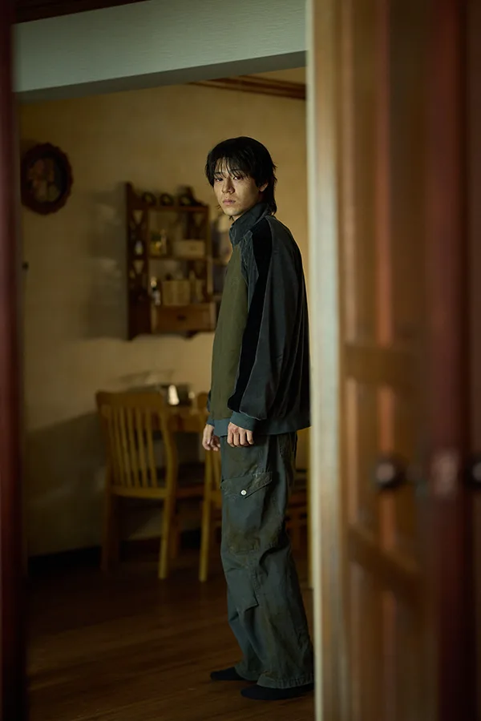
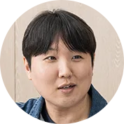
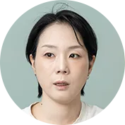

-

송석주 기자 “친숙함의 틈 포착한 공간 연출… 신파 없이 질주”
-
한상희 평론가 “이미지와 실체 위계 묻는 설정 흥미… 아쉬운 연출·시나리오”
-
연상호식 두 번째 초저예산 장르 실험이 보여 준 가능성과 한계
* 이 글에는 스포일러가 포함되어 있습니다.
<얼굴>(2025)에 이은 연상호 감독의 두 번째 초저예산 프로젝트 <실낙원>이 공개됐다. 9년 만에 살아 돌아온 아들 선우(배현성)와, 그 사이 잃어버린 아들을 놓지 못해 AI 프로그램 ‘낙원의 아이들’ 속에 만들어진 어린 아들에 기대어 살아온 엄마 소영(김현주)에 관한 이야기다. 가장 친밀한 존재가 낯선 타인으로 돌아올 때 그를 밀어낼 것인가 아니면 붙들 것인가. 우리는 무엇을 진짜라고 불러야 할까. 영화가 던지는 여러 질문들을 곱씹는 동시에 연상호식 저예산 장르 실험이 한국영화의 안정적 모델로 자리 잡을 수 있을지에 대해서도 돌아보게 된다. 송석주 이투데이 기자와 한상희 영화평론가가 <실낙원>의 안팎을 살폈다.
Q <실낙원>은 연상호 감독의 전작 <얼굴>에서 이어지는 프로젝트다. <얼굴>은 아버지와 아들, <실낙원>은 엄마와 아들의 관계를 다룬다. 두 작품은 어떤 면에서 이어지고, <실낙원>은 어떤 면에서 다른 방향을 모색했을까?
한상희 영화평론가(이하 한상희 평론가) 가족 구성원 안에서 모종의 사건으로 한 사람이 다른 사람을 낯설게 여기게 되는 서사라는 점에서 두 영화는 이어진다. 차이가 있다면 <실낙원>에서는 엄마가 아들의 두 가지 모습, 성장해 살아 돌아온 현실의 아들과 가상 세계 속 어린 아들의 모습을 동시에 보는 괴로움이 <얼굴>에서 아들이 아버지의 다른 모습을 뒤늦게 깨닫게 된 경우보다 배가되지 않을까 생각했다. <얼굴>에서 아들이 아버지와 같은 모습을 보이는 엔딩도 소름 끼치지만, <실낙원>에서 엄마가 마지막에 보여 주는 모습은 광기에 가까웠다. <얼굴>에서는 아버지와의 관계가 비틀어지는 계기로서 엄마의 존재가 언급되고, 엄마와의 과거가 현재로 끼어들어 사건이 벌어진다. <실낙원>에는 아버지에 대한 정보가 아예 없고, 아들 류선우가 엄마 류소영의 성을 따른다는 것이 인상적이었다.
송석주 이투데이 기자(이하 송석주 기자) <실낙원>은 <얼굴>에 이은 2부작처럼 보인다. 두 영화 모두 가장 친밀하게 여기던 존재가 전혀 다른 사람으로 느껴지는 데에서 오는 낙차에 관한 이야기다. <얼굴>은 부정적인 환상이 너무 강해져서 현실의 아내를 제거하고, <실낙원>은 어린 아들에 대한 좋은 기억이 너무 강해서 현실의 아들을 거부한다. 둘 다 내 기억 속 이미지 때문이다. 가족도 결국 타인이니 우리는 타자를 어떻게 인식해야 하는가, 라는 근원적인 질문을 두 영화가 내포하고 있다.
Q <실낙원>은 14회차 촬영, 5억 원의 초저예산으로 만들어졌다. 이런 제작 환경이 오히려 미장센의 밀도와 심리적 폐쇄감을 만들었을까, 아니면 예산의 한계를 화면에 드러냈을까?
한상희 평론가 저예산으로 만들어졌다는 것이 화면에 드러나지만 그게 부정적으로 작용하지 않는다. 등장하는 공간의 개수를 제한하고 그 공간들만으로 영화를 운영해 연출의 간결함과 경제성이 엿보였다. 간단한 모티프들도 반복적으로 등장한다. 어린 아들과 연결되는 사건이 일어날 때마다 소영의 집이 있는 골목에 사는 아이의 축구공이 소영의 자동차나 집 유리창을 치고, 과거의 아들과 현재의 아들의 연속성을 손톱을 물어뜯는 버릇으로 보여 주는 식이다. 정말 돈이 안 드는 장치다.(웃음) 관객이 이야기에 더 집중하게 하는 효과가 있었다.
송석주 기자 한국 독립영화 순제작비가 평균 3, 4억 원이니 가성비 있게 영화를 잘 뽑아냈다. 장소가 집, 골목, 경찰서, 직장, 탄광 정도인데 이 정도 서스펜스를 만드는 건 연출의 능력이다. 돌아온 아들 선우가 낯설어서 집에서 무슨 일이 일어날지 두려워진다. 9년 전 사건과 관련 있는 폐광이 오히려 더 안온하게 느껴질 정도다. 연상호 감독의 대작으로 분류되는 <부산행>(2016)이나 <군체>도 사실 KTX, 쇼핑몰 같은 한정된 공간에서 사건이 일어난다는 것을 생각하면 연상호 감독은 확실히 공간을 잘 활용한다.


Q ‘연상호 영화’가 다뤄 온 ‘가족 내 딜레마’에는 어떤 특성이 있을까? 그리고 그 특성은 <실낙원>에서 긍정적으로 작용했을까, 부정적으로 작용했을까?
송석주 기자 <부산행>과 <군체>에서는 내 가족, 내 친구, 내 이웃, 자주 가는 식당 주인처럼 친근감을 가진 존재가 좀비로 변한다. 그럼 그 사람은 내가 알던 존재와 다른 존재인가? <얼굴>과 <실낙원>에서는 그 범위가 가족 안으로 좁혀진다. 그리고 AI로 만들어진 아들이 진짜인가 돌아온 아들이 진짜인가, 나는 어떤 아들을 선택해야 하는가 하는 딜레마까지 연결해 영화에 긍정적으로 작용했다고 생각한다. 새벽에 물 마시러 나왔다가 화장실 문이 조금 열려 있으면 무섭지 않나. 연상호 감독은 소파 밑, 화장실 문틈, 싱크대 선반처럼 친숙한 공간의 틈, 우리가 불안을 느끼는 요소를 잘 포착해 왔다. 그 틈이 가족에게도 있는 것이다. 친숙함의 틈이다.
한상희 평론가 <얼굴>과 <실낙원> 속 가족 내 딜레마는, 가까워야 마땅하다고 여겨지고 그렇기에 가장 잔인할 수 있는 관계가 가족이라는 데에서 온다. <실낙원>에서 아들 선우는 9년 만에 엄마 소영에게 돌아와 무자비한 모습을 보인다. 이 사람은 내 엄마이니 이렇게 행동해도 나를 용서할 거라는 식이다. 그리고 소영에게 자신이 납치한 옆집 아이와 가상현실 속 귀여운 아들 선우 가운데 누구를 선택할 거냐며 게임을 벌인다. <실낙원>은 그 지점을 잘 이용한다.


Q 사라진 아이가 ‘다른 존재’로 돌아오는 서사, 상실을 견디지 못하는 부모의 공포는 이미 여러 영화들이 다뤄 온 설정이다. <실낙원>은 이 공포를 자기만의 방식으로 소화했나?
송석주 기자 9년의 세월 동안 아들만 변했을까. 엄마 소영도 변했다. 9년 동안 현실과 유리된 채 가상현실에 빠져 있었으니 판단력이 흐려지고 대인관계도 약화됐을 수 있다. 그래서 마지막에 끔찍한 선택을 한다. 영화는 엄마 소영이 과연 아들을 잃기 전과 같은 존재인가, 라는 질문도 던진다.
한상희 평론가 <실낙원>은 자기만의 공포를 끌고 갈 만큼 독특하지는 않다. 다만 가짜로 만든 아이와 다른 존재가 되어 살아 돌아온 아이가 엄마의 생활 안에서 공존해 버리는 구간이 있다. 소영이 성인이 되어 돌아온 아들 선우가 보는 앞에서 AI 안경을 쓴 채 허공에 대고 ‘낙원의 아이들’ 속 어린 선우와 대화하는 상황이 이어진다. 아들이 두 명일 수는 없다. 성립 불가능하고 해체되어야 하는 상황이다. 그 때문에 보는 내내 마음이 급박했는데, 그 급박함이야말로 서사를 파국으로 끌고 갈 수밖에 없도록 만드는 <실낙원>의 특수성이긴 하다.
Q 연상호 감독은 ‘낙원의 아이들’이라는 AI 프로그램을 등장시켜 영화에 SF적인 요소를 심어 놓았다. 이 설정은 어떤 동시대적인 질문을 던지고 있을까?
송석주 기자 ‘낙원의 아이들’이 왜 나와야 했는지 따져 보면 낙원 바깥에 있는 어른이 상실을 견디지 못했기 때문이다. 정상적인 애도는 결국 일상으로 넘어와야 한다. 소영은 그것에 실패한 인물이다. 실제로 아들이 돌아왔는데도 “너는 내 아들이 아니야”라면서 현실의 아들을 부정하기에 이른다. 어른이 된다는 건 가장 소중한 것을 상실한 채로도 살아갈 수 있어야 한다는 감각을 몸에 익히는 것이라고 생각한다. <실낙원>의 설정은 극단적이긴 하지만 그것을 일깨우는 효과가 있다.
최근 영화들이 AI를 다루는 방식을 아쉽게 느껴 왔다. <어쩔수가없다>(2025)에서 인간의 노동력을 AI가 대체하는 마지막 장면이 그랬고, 김태용 감독의 <원더랜드>(2024), 고레에다 히로카즈 감독의 <상자 속의 양>도 <실낙원>과 비슷한 설정을 갖고 있는데, AI를 잘 활용하지 못했다. 영화에서 AI를 과하게 다루면 오히려 빈틈이 발견되는데, <실낙원>은 툭 건드리기만 한다. 안경만 띡! 누르면 된다. 너무 경제적이다.(웃음) AI가 중요한 게 아니라 주인공 소영이 AI 프로그램 속 인물에 의지한다는 게 중요하기 때문이다. 그래서 오히려 세련된 느낌이 있다.
한상희 평론가 영화 속에서 어른이 된 실제 아들, AI 이미지로 존재하는 어린 아들, 그리고 실재하는 옆집의 아이를 두고 소영이 선택해야 하는 상황이 흥미롭다. 영화의 질문이 이미지와 실체 사이에 가치의 위계가 있는지에 대해서까지 나아간다고 봤다. 영화 속에 ‘낙원의 아이들’은 “볼 수는 있지만 만질 수는 없다”는 대사가 나온다. 이미 AI가 우리 생활에 밀접하게 들어와 있는데, 촉각 하나가 탈락됐다고 해서 그게 실체가 아니라고 할 수 있을까? 이미지도 이미 우리에게 하나의 현실이다. 물론 가상의 아이와 납치된 아이 중에서는 당연히 납치된 아이가 더 중요하다. 하지만 더 극단까지 밀고 나가면, 그게 아닐 수도 있는 가능성을 이야기하고 있는 건 아닐까 싶다.
송석주 기자 ‘낙원의 아이들’ 속에 사는 어린 선우가 울면서 “엄마, 나 삭제해 버리는 거야?” 같은 대사를 할 때 가짜임에도 슬프다. 그런 존재를 어떻게 인식해야 하는지는 영화 바깥에서도 진지하게 고민해 볼 문제다. 진짜이든 가짜이든 어떤 존재를 서사화할 때 그 존재에게 주체성을 부여해야 한다. <원더랜드>에서 사고로 식물인간이 된 후 인공지능으로 복원된 태주(박보검) 같은 캐릭터는 버튼 한 번 누르면 없어져 버린다. <실낙원>의 AI 아이 선우는 그에 비해 스스로 학습하고 외부의 영향을 받으며 약간의 주체성을 보인다. 그런 점이 좋았다.
Q <얼굴>에서는 장애인, 약자에 대한 사회적 시선이 중요하게 다뤄졌다. <실낙원>은 실종자들과 그들을 상실한 사람들, 그 외의 약자들에게 대한 사회적 시선을 어떻게 다루고 있다고 보았나?
한상희 평론가 이 부분이 굉장히 관습적인 묘사라고 봤다. 9년 전 캠핑을 갔다가 사라진 아들을 끝내 찾지 못한 소영이 처음으로 AI 안경을 끼고 ‘낙원의 아이들’을 시연해 아들을 만날 때 기자들이 몰려와 사진을 찍는 식으로 초반부를 후다닥 끌고 간다. 이야기를 효율적으로 전개해 본론으로 빨리 넘어가겠다는 의도는 알겠다. 사회가 피해자인 소영이 겪은 사건을 흥밋거리이자 경제적 효과를 낼 수 있는 대상으로 본다는 것, 피해자를 주목하는 언론이 너무 잔인하다는 것도 이해할 수 있다. ‘낙원의 아이들’이라는 가상의 서비스가 아이를 잃은 부모들을 진심으로 애도하기 위해 만든 것은 아니며, 부모들 역시 다 알면서 그 서비스를 이용한다는 것도. 그런데 이건 이미 많은 영화에서 장애인, 약자, 피해자에 대한 사회적 대우를 그릴 때 택했던 익숙한 방식이다. <실낙원>은 그것을 그대로 쓴 느낌이다. 그래서 그 부분의 대사도 연출도 아쉽다.
송석주 기자 설경구, 전도연 배우 주연의 <생일>(2019)이 남겨진 사람들의 슬픔을 정면으로 다룬 영화라면, <실낙원>은 그런 영화가 아니다. 인물에게 부여된 설정으로 그 부분을 건드리고 있을 뿐이다. 사회적 약자라는 키워드로 보면 소영과 같은 골목에 살고 있는 조선족 모자가 눈에 띈다. 한국영화에서 부정적으로 그려지는 경우가 많았던 조선족이 <실낙원>에서는 밝고 근면한 노동자로 그려진다. 그녀의 아들은 소영의 집이 있는 음침한 골목에서 유일하게 활력을 주는 존재다. 소영과 아들 선우의 관계는 파국으로 치닫지만, 조선족 모자를 통해 연상호식 사회적 연대의 가능성을 약간이나마 보여 준 것 같다. 그리고 소영에게 아들이 살아 돌아왔으니 실종됐을 때 함께 있었던 내 아이는 어떻게 됐는지 물어봐 줄 수 있냐는 유가족이 등장하기도 한다. 남겨진 사람들의 슬픔을 완전히 도외시했다고 보이지는 않는다.
Q <실낙원> 개봉에 앞서 ‘<실낙원> 유니버스’를 이루는 네 개의 스페셜 단편영화들이 프리퀄 형식으로 유튜브에 공개됐다. 늘 자신의 콘텐츠에 세계관을 만들어 가려고 하는 크리에이터 연상호의 작업 방식을 어떻게 바라보나?
송석주 기자 거창하게 보지는 않는다. 사실상 홍보성 콘텐츠로, 네 개의 단편들로 <실낙원>을 사전 학습하게 하는 느낌이었다. 다만 단편들과 <실낙원>이 모두 내가 상실한 존재를 다시 만나는 게 정말 좋은가, 라는 질문을 계속 던진다는 점에서 유의미하고, 미묘하게 ‘별로 안 좋다’라고 말하는 것 같다.(웃음) 애도라는 건 결국 그 사람 없이 현실을 살아 내는 것이다.
한상희 평론가 <실낙원>을 보고 나서 단편들을 찾아보니 너무 재미있었다. 4편이 AI 엄마와 사는 딸의 이야기다. 엄마의 정보 데이터가 소실되고 있다는 얘기를 들은 딸이 엄마의 원래 목소리와 얼굴을 기억하지 못해 함께 찍은 사진을 찾고, 함께 살던 AI 엄마가 사진 속 엄마와 전혀 다른 사람이라는 것을 깨닫는다. 물리적인 차원이 아니라 인식의 차원에서 인간의 본질은 도대체 무엇일까 생각하게 됐다. 단편들이 보여 주는 AI 복원 이미지의 다층적인 가능성 가운데 <실낙원>으로 발전된 건 일부인 것 같다. 이렇게 구축된 세계관이라면 이후 더 재미있는 게 나올 수 있겠다는 가능성이 보였다. 그렇게 만들어진 영화들이 아주 견고하지는 않더라도 상호관계를 가지고 해석과 메시지의 영향을 주고받게 된다면, 그게 관객들이 ‘연상호 영화’를 찾게 되는 이유가 되지 않을까.
연상호 감독의 <실낙원> 유니버스 영상 ep1 & ep2
Q 이야기의 끝은 묻어둔 상처가 도달할 수밖에 없는 필연적 귀결일까? 아니면 장르적 클라이맥스를 위한 비약에 그칠까?
한상희 평론가 충분히 예상 가능한 엔딩이었다. 소영에게는 세 가지 선택지밖에 없었다. 가상의 어린 아들과 성인이 되어 돌아온 아들 중 하나를 택하거나 둘 다 포기하거나. 영화 내내 소영이 어떤 선택을 할지 헷갈리는 지점들이 나오지만, 결국 지금의 엔딩 말고 다른 선택지는 없지 않았을까.
송석주 기자 큰 틀에서 동의한다. 극 중에서 아들 선우가 실종되기 전 가장 먹고 싶어 했던 엄마의 오므라이스가 9년 후에는 아들을 혼절시키는 장치로 쓰인다. 아들에게 엄마는 내 생명의 근원인데, 결국 나를 파국으로 몰고 간다. 소영이 오므라이스를 해 주며 선우를 감정적으로 자극하자 선우는 울면서 과거를 회상한다. 유괴범이 “너는 눈빛부터 달라, 씨앗부터 다른 것 같다”고 했다면서 자신에게 강요했던 일을 말한다. 그 대사를 괜히 넣은 게 아닐 것이다. 그렇다면 그 폭력의 씨앗은 소영이다. 오므라이스라는 기호가 활용되는 방식, 9년 전 사라진 아이들 중 일부의 시신이 발견된 폐광과 유괴범의 관련성이 스치듯 나온다. 공간과 엄마의 존재를 유기적으로 맞추려고 했다고 느꼈고, 그런 지점들이 쌓여서 만들어진 엔딩이 설득력 있었다.
Q <실낙원>의 패착이 있다면 무엇일까?
한상희 평론가 앞에서는 여러 장점을 말했지만 실은 연출이 전체적으로 아쉽다. 앞서 축구공이 유리창에 부딪히고 아이가 손톱을 물어뜯는 것이 경제적인 연출이라고 말했지만 그만큼 단순해서 영화를 납작하게 만든다. 엔딩은 이해는 가지만 기이하게 찍혔고, 시나리오 곳곳에 결함이 많다. <실낙원>이 <호프>처럼 ‘개연성 없음’을 콘셉트로 하는 영화는 아니지 않나. 촬영도 계획한 미장센으로 보이지 않고 급하게 찍은 느낌이다. 그런 것들이 영화를 전체적으로 헐겁게 만든다. <실낙원>에서 가장 괜찮다고 여긴 부분은 가상 세계의 아이와 살아 돌아온 아이의 관계를 설정하고, 거기에서 이야기가 나온다는 것이었다.
송석주 기자 나는 좋게 봐서 그런지 완전 집중했다. 특별출연했다는 구교환 배우를 미처 찾지 못했을 정도다.(웃음) 일정 부분 역할을 할 것 같던 기자의 존재가 급하게 삭제된 게 아쉽다. 선우가 왜 9년 만에 돌아와야 했는지에 대한 개연성도 약하다. <올드보이>(2003)의 오대수(최민식)처럼 감금되어 있었던 것도 아니고.(웃음) 소영이 성인이 된 선우와 무작정 같이 살게 되는 것도 그렇다. 하지만 그런 디테일이 작품 전체를 볼 때 흠이 된다고 생각하지 않는다. 오히려 연상호 감독의 전작 <반도>(2020)나 <염력>(2018)보다 훨씬 좋았고, 흥행에 성공한 <부산행>이나 <군체>보다도 나았다. <부산행>과 <군체>는 스타들이 나오는 대작이라 대중성을 더 신경 써야 했고, 한국 관객들이 싫어하는 신파도 있었다. <실낙원>에는 신파가 없다. 경제성을 확보해야 하니 다소 헐거워 보일지라도 쭉 밀고 나가며 질주하는 느낌이 있다. 연상호 감독은 적은 돈으로 찍어야 잘 만든다는 우스갯소리가 있는데, <얼굴>에 이어 <실낙원>에서도 재확인했다.(웃음)
Q 앞으로도 이어질 연상호식 초저예산 장르 실험은 향후 한국 장르영화가 참조할 만한 모델이 될 수 있을까, 아니면 여전히 연상호 감독의 브랜드와 네트워크로만 가능한 예외일 뿐일까?
송석주 기자 지금 한국영화에는 허리가 없다. 봉준호, 박찬욱 감독이 <살인의 추억>과 <올드보이>를 내놓았던 2003년과 비교하면, 극장이 어려운 지금은 신인 감독이 입봉하기도 힘든 구조다. 그런데 <실낙원>의 예산으로 이런 결과물을 뽑아낸다면, 게다가 그것이 대중성이 있는 장르영화라면, 허리 영화가 많아야 하는 지금 한국영화 시장에서 가성비 있는 제작 모델이 될 수 있을 것 같다. 물론 연상호의 이름값을 보고 배우들이 개런티를 낮출 수도 있는 등 여러 부수적 요인이 있겠지만.
한상희 평론가 장르영화를 만들고 싶은 다른 감독이 연상호 감독이 하는 방식을 시도한다고 해도 지금 한국영화계의 규모나 조건을 생각하면 잘 안 될 것 같다. 일본처럼 스튜디오 시스템 같은 토양이 마련되어 있다면 저예산으로 빨리빨리 만들 수 있겠지만. 연상호 감독 정도의 위치에 먼저 올라선 이후에나 할 수 있는 것 아닐까. 신인 감독이 바로 도전하기는 어렵다고 본다.


Q 결국 <실낙원>은 YES인가 NO인가?

송석주 기자
YES.
극장에서 충분히 볼 만하다.

한상희 평론가
장르적 가능성을 느껴 보고 싶고, SF적인 상상력과 존재론적 질문을 마주해 보고 싶다면 YES.
완성도 높은 수작을 만나고 싶다면 NO다.
송석주 기자
YES.
극장에서 충분히 볼 만하다.
한상희 평론가
장르적 가능성을 느껴 보고 싶고, SF적인 상상력과 존재론적 질문을 마주해 보고 싶다면 YES.
완성도 높은 수작을 만나고 싶다면 NO다.